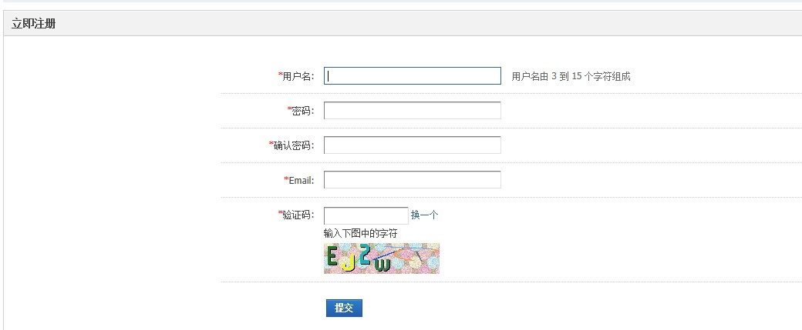

9.5. 注册¶
注册
一、注册：
1、Discuz! X3可以开启“注册需要验证邮箱”，验证邮箱为注册的第一步。
2、系统提供了两种注册方式，即普通注册和邀请注册：
1）、普通注册：正确填写用户名、密码、邮箱等各项内容， 验证通过，提交即可。
2）、邀请注册：若系统只开启了邀请注册，则邀请码为必填项，用户注册时必须持有邀请码才能注册，邀请码可以通过论坛中的已注册用户获取或是在线购买，其他和普通注册相同；若两项注册同时开启，则邀请码为选填项。
3、Discuz! X3 可以取消注册邮箱必填，开启后如果用户不填写注册邮箱，将自动生成一个随机邮箱地址。
二、登录：
1、普通登录：用户可以选择使用用户名、UID、email进行登录，输入密码，若设置了安全提问，选择问题，输入答案，勾选自动登录。（浏览器将保存登录信息下次浏览时自动登录），点击登录即可；（若因密码错误等原因，登录失败，最多可尝试5次，5次后将锁定账户，提示登录错误次数过多，15分钟后再来登录）

三、找回密码：
1、如果忘记密码，可点击找回密码，填写注册时使用的Email 提交即可，系统将会将重置密码的链接发送到邮箱，点击重置即可（三天内有效）；如果 Email 已失效或无法收到信件，可以与论坛管理员联系重置密码。